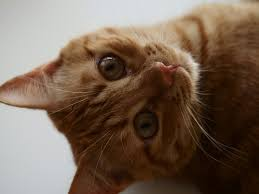
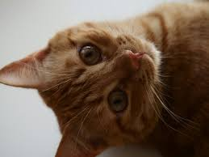

Tipos de Mascotas
Explora una variedad de mascotas, desde los compañeros peludos más comunes hasta los exóticos más únicos.
Perros

Descripción: Los perros son leales, sociables y requieren ejercicio diario. Son ideales para familias activas.
Gatos
 

Descripción: Los gatos son independientes y curiosos. Prefieren ambientes tranquilos y tienen habilidades de caza excepcionales.
Reptiles

Descripción: Los reptiles son mascotas exóticas que requieren cuidados específicos, como iluminación y temperatura controlada.
Peces
Descripción: Los peces son ideales para quienes buscan una mascota de bajo mantenimiento. Necesitan acuarios bien cuidados.
Aves
Descripción: Las aves son coloridas, inteligentes y algunas pueden imitar sonidos humanos. Necesitan atención y estimulación.